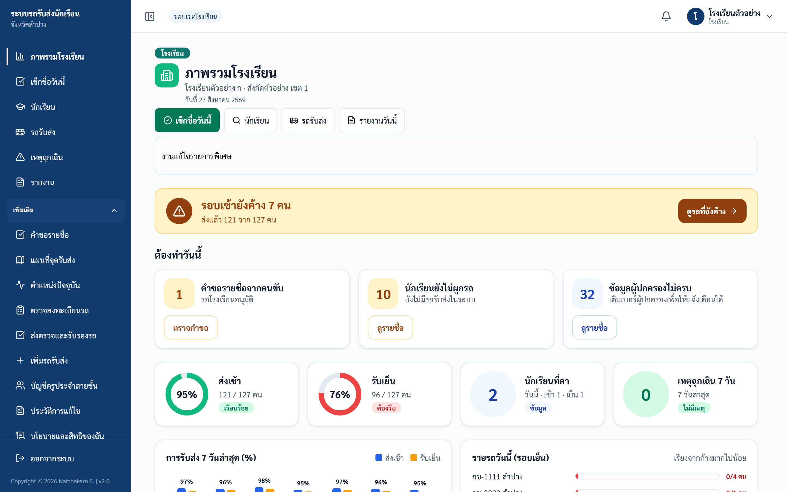

คู่มือใช้งานระบบรถรับส่งนักเรียนจังหวัดลำปาง
เว็บไซต์ https://schoolbuslampang.com · ปรับปรุง 24 ต.ค. 2569 · ภาพในคู่มือเป็นข้อมูลตัวอย่าง
หน้านี้คือสารบัญของคู่มือทั้งหมด เลือกเล่มตามงานที่คุณทำ ทุกเล่มเขียนเป็นขั้นตอนสั้น ๆ อ่านบนมือถือได้
เลือกคู่มือของคุณ
| ถ้าคุณเป็น | เข้าระบบด้วย | คู่มือ |
|---|---|---|
| คนขับรถ | ทะเบียนรถ (บนมือถือ) | 📖 คู่มือคนขับ · PDF |
| ครูที่เช็กชื่อนักเรียนขึ้น-ลงรถ | บัญชีครูประจำสายชั้นที่โรงเรียนสร้างให้ | 📖 คู่มือครูเช็กชื่อ · PDF |
| เจ้าหน้าที่โรงเรียน (ผู้ดูแลงานรถรับส่งของโรงเรียน) | ชื่อผู้ใช้ของโรงเรียน | 📖 คู่มือโรงเรียน · PDF |
| เจ้าหน้าที่สังกัด/เขต (สพป. สพม. ศธจ. และสังกัดอื่น) | ชื่อผู้ใช้ของสังกัด | 📖 คู่มือสังกัด/เขต · PDF |
| เจ้าหน้าที่ระดับจังหวัด | ชื่อผู้ใช้ของจังหวัด | 📖 คู่มือจังหวัด · PDF |
| เจ้าหน้าที่ขนส่ง (ตรวจสภาพรถ) | ชื่อผู้ใช้ของขนส่ง | 📖 คู่มือขนส่ง · PDF |
| ผู้ดูแลระบบ | ชื่อผู้ใช้ของผู้ดูแลระบบ | 📖 คู่มือผู้ดูแลระบบ · PDF |
| ผู้ปกครอง | LINE บัญชี “รถรับส่งนักเรียน” @943glwjf (ไม่ต้องเข้าเว็บไซต์) | 📖 คู่มือผู้ปกครอง · PDF |
💡 ตั้งแต่ภาคเรียนที่ 2 (12 ต.ค. 2569) ครูเป็นผู้เช็กชื่อนักเรียนขึ้น-ลงรถเอง ครูอ่าน คู่มือครูเช็กชื่อ เล่มเดียวก็พอ
ระบบนี้ทำอะไร
- บันทึกว่านักเรียนขึ้นรถและลงรถแล้วหรือยัง ทุกวัน
- ผู้ปกครองดูทาง LINE ได้ว่าลูกขึ้นรถหรือถึงแล้วหรือยัง และได้รับข้อความเมื่อมีเหตุฉุกเฉิน
- เก็บข้อมูลรถ คนขับ และผลตรวจสภาพรถ
- สรุปภาพรวมให้โรงเรียน สังกัด และจังหวัด
แต่ละคนเห็นเฉพาะข้อมูลที่ตัวเองดูแล เช่น โรงเรียนเห็นเฉพาะนักเรียนของโรงเรียนตัวเอง
หน้าจอทุกบัญชีอ่านแบบเดียวกัน
- เมนูด้านข้าง: งานที่ทำทุกวันอยู่ด้านบน งานที่ทำนาน ๆ ครั้งอยู่ใต้หัวข้อ เพิ่มเติม (กดเพื่อเปิด)
- หน้าแรก: อ่านจากบนลงล่าง เริ่มจากสรุปวันนี้ แล้วเป็นงานที่ต้องทำวันนี้
- สี: เขียว = เรียบร้อย · เหลือง = รอติดตาม · แดง = ต้องรีบทำ · ฟ้า = ข้อมูลทั่วไป · เทา = ยังไม่เริ่ม

ภาพ: เมนูด้านข้าง (เปิดหัวข้อ “เพิ่มเติม”) และหน้าแรก ตัวอย่างบัญชีโรงเรียน
เข้าสู่ระบบ (ทุกบัญชี ยกเว้นผู้ปกครอง)
- เปิด Chrome หรือ Safari ไปที่ schoolbuslampang.com
- ช่อง ชื่อผู้ใช้หรือทะเบียนรถ
- คนขับ: พิมพ์ทะเบียนรถให้ตรงกับที่โรงเรียนบันทึกไว้ ทั้งเว้นวรรคและชื่อจังหวัด เช่น
นข 2210 ลำปาง - คนอื่น: พิมพ์ชื่อผู้ใช้ที่หน่วยงานให้มา
- คนขับ: พิมพ์ทะเบียนรถให้ตรงกับที่โรงเรียนบันทึกไว้ ทั้งเว้นวรรคและชื่อจังหวัด เช่น
- พิมพ์ รหัสผ่าน (กดรูปดวงตาเพื่อดูว่าพิมพ์ถูกไหม)
- กด เข้าสู่ระบบ
เข้าครั้งแรก หรือหลังมีคนรีเซ็ตรหัสให้ ระบบจะให้ตั้งรหัสผ่านใหม่ก่อน รหัสใหม่ต้องยาวอย่างน้อย 8 ตัว ห้ามเหมือนชื่อผู้ใช้ และห้ามเดาง่าย เช่น 12345678
เปลี่ยนรหัสเองภายหลัง: กดชื่อบัญชีมุมขวาบน แล้วกด เปลี่ยนรหัสผ่าน
ลืมรหัสผ่าน
ระบบยังไม่มีปุ่มให้ตั้งรหัสใหม่เอง (ยกเว้นผู้ดูแลระบบ) ให้ขอคนที่ดูแลบัญชีของคุณรีเซ็ตให้
| บัญชีของคุณ | ขอให้ใครรีเซ็ต |
|---|---|
| ครูประจำสายชั้น | บัญชีหลักของโรงเรียน (เมนู บัญชีครูประจำสายชั้น) |
| คนขับ | แจ้งโรงเรียนที่ดูแลรถของคุณ |
| โรงเรียน | สังกัด/เขตของโรงเรียน (เมนู เพิ่มโรงเรียนใหม่) หรือผู้ดูแลระบบ |
| สังกัด/เขต และขนส่ง | จังหวัด (เมนู บัญชีสังกัดและขนส่ง) หรือผู้ดูแลระบบ |
| จังหวัด | ผู้ดูแลระบบ |
| ผู้ดูแลระบบ | กด ลืมรหัสผ่านหรือเข้าใช้งานไม่ได้ ใต้ปุ่มเข้าสู่ระบบ แล้วกด ผู้ดูแลระบบ: รีเซ็ตผ่าน LINE |
หลังรีเซ็ต ทุกเครื่องที่เปิดบัญชีนั้นค้างไว้จะถูกออกจากระบบ ให้เข้าใหม่แล้วตั้งรหัสใหม่
ปัญหาที่พบบ่อย
| ถ้าเห็น/ถ้าเกิด | ให้ทำแบบนี้ |
|---|---|
| ชื่อผู้ใช้หรือรหัสผ่านไม่ถูกต้อง | พิมพ์ใหม่อีกครั้ง คนขับให้ดูการเว้นวรรคของทะเบียนรถ ถ้าแน่ใจว่าถูกแล้วยังเข้าไม่ได้ ให้แจ้งคนที่ดูแลบัญชีของคุณ |
| มีการพยายามเข้าสู่ระบบหลายครั้งจากเครือข่ายนี้ | รอประมาณ 15 นาที แล้วลองใหม่ บัญชีไม่ได้ถูกปิด ไม่ต้องขอรหัสใหม่ |
| บัญชีนี้ถูกปิดการใช้งาน | แจ้งคนที่ดูแลบัญชีของคุณ |
| เซสชันหมดอายุ กรุณาเข้าสู่ระบบใหม่ | เข้าสู่ระบบใหม่ ถ้าเพิ่งมีการเปลี่ยนรหัส ให้ใช้รหัสใหม่ |
| ไม่สามารถเชื่อมต่อระบบได้ | ตรวจอินเทอร์เน็ต แล้วลองใหม่ |
| ตัวเลขบนหน้าจอไม่ตรงกับที่คิด | ดูว่าเลือกวันที่ถูกต้อง แล้วรีเฟรชหน้า |
| ภาษาไทยใน PDF ตัวเพี้ยน | เปิดไฟล์ด้วย Chrome หรือ Adobe Acrobat |
| ผู้ปกครองบอกว่า LINE ไม่ตอบ | ให้ตรวจว่าเพิ่มเพื่อนบัญชี @943glwjf (“รถรับส่งนักเรียน”) แล้วพิมพ์ ช่วยเหลือ |
ปัญหาอื่น ให้แจ้งคนที่ดูแลบัญชีของคุณหรือผู้ดูแลระบบ บอกชื่อผู้ใช้ หน้าที่เปิดอยู่ ข้อความบนจอ และเวลาที่เกิด (ห้ามส่งรหัสผ่าน)
เอกสารประกอบการอบรม (ส.ค. 2569)
ไฟล์ชุดนี้ใช้ในการอบรมเดือนสิงหาคม หน้าจอบางหน้าเปลี่ยนไปแล้ว ถ้าขัดกับคู่มือบนเว็บนี้ ให้ยึดคู่มือบนเว็บ
| ลำดับ | เอกสาร | ดาวน์โหลด |
|---|---|---|
| 00 | สารบัญชุดคู่มืออบรม | |
| 00 | เข้าสู่ระบบและความปลอดภัย | |
| 01 | ผู้ดูแลระบบ | |
| 02 | จังหวัด | |
| 03 | สังกัด/เขต | |
| 04 | โรงเรียน (เต็มสิทธิ์) | |
| 05 | ครูประจำสายชั้น | |
| 06 | คนขับ | |
| 07 | ขนส่ง | |
| 08 | ผู้ปกครองผ่าน LINE | |
| 09 | เอกสารเตรียมอบรมครู (สำหรับผู้จัดอบรม) |
เอกสารงานเซิร์ฟเวอร์และการสำรองข้อมูลของทีมงานไม่ได้เผยแพร่บนเว็บนี้ ทีมงานเปิดอ่านได้จากคลังโค้ดของโครงการ